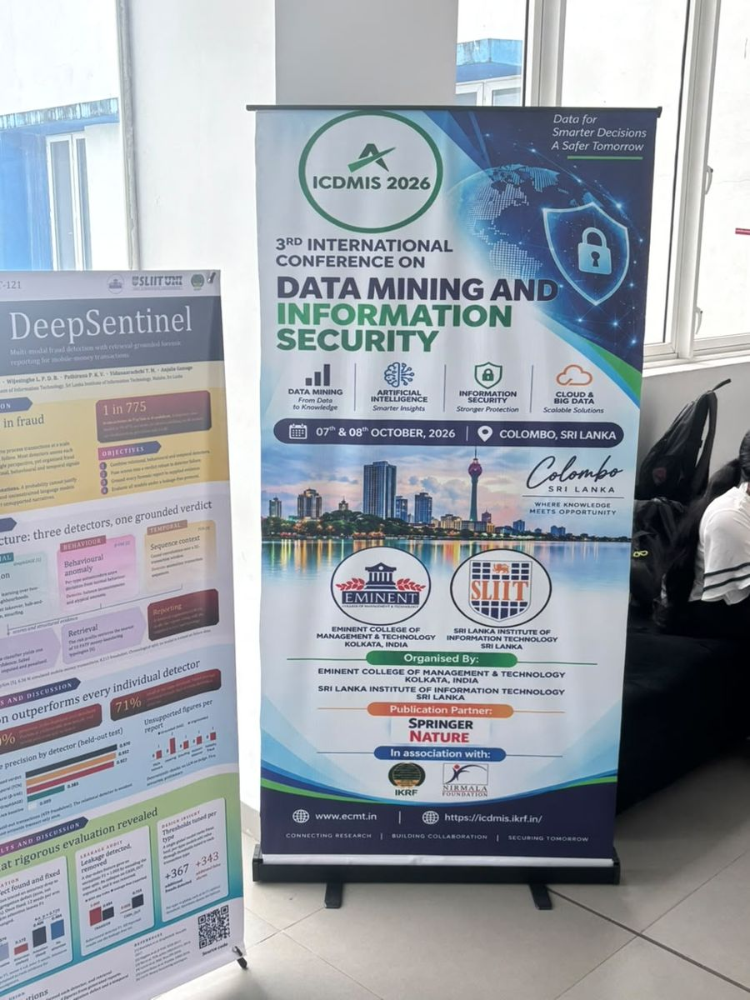
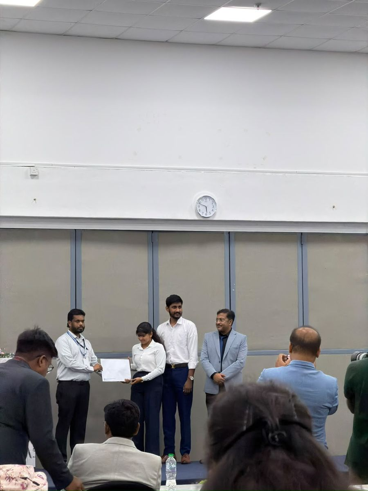
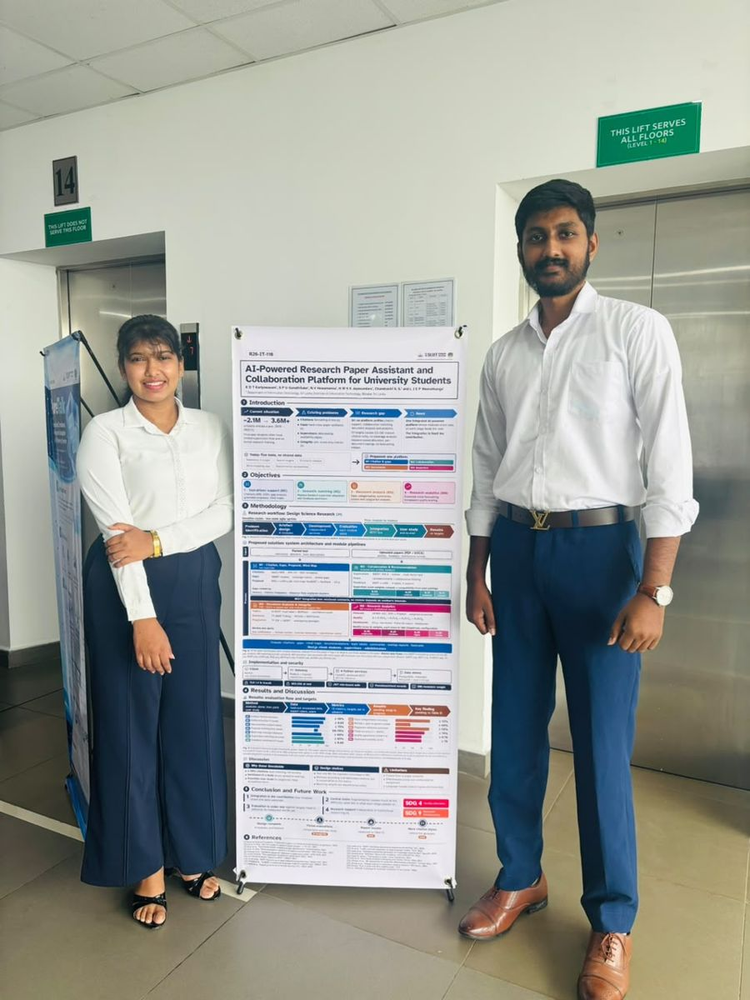

Slides · 01Feb – Mar 2026Proposal
Proposal Presentation
The research problem, gap, objectives, methodology and evaluation targets for the four components.
CompletedView slides
Slides from every assessment presentation so far, with room for those still to come. All decks are stored in our Google Drive folder.
Our technical poster summarises the introduction, objectives, Design Science Research methodology, system architecture, results and SDG contribution of Researchly AI on a single sheet.


